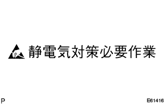
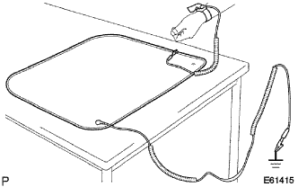

Meter & gauge system notes |
Static electricity countermeasures required work
Combine Syon Meter ASSY attachment / inspection / replacement work
|  |
Instruction / inspection / replacement work of internal wiring
Recommended tool
Wristband for static electricity prevention (body removal of the body)
Conductive mat (product prevention)
Precautions during work
|  |
Attach a wristband to prevent static electricity on your wrist.
Fix the ground clip of the conductive mat to the ground point of the building or workbench.
Fix the earth clip of a wristband for static electricity to prevent static electricity to the predetermined part of the conductive mat.
To prevent damage to the electronic device, when attaching and detaching the main unit or peripheral device, work is performed after removing the battery power.
Never touch the electronic components on the board or the IC pin.
At the time of work, the clothing does not approach or contact the product.